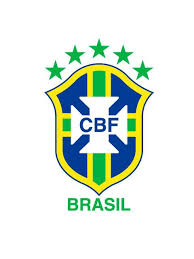
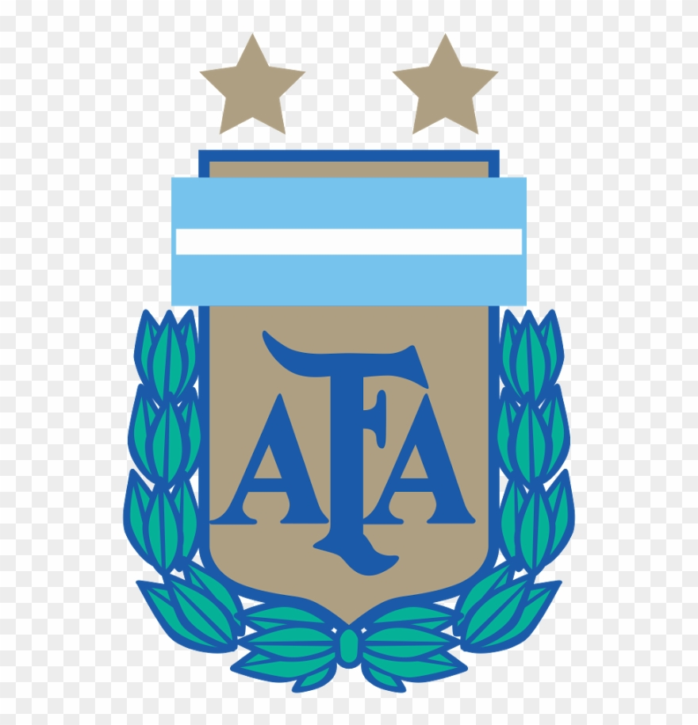

HISTORY OF FOOTBALL
The man most responsible for the transition from this rugby-like game to the sport of football we know today was Walter Camp, known as the “Father of American Football.” As a Yale undergraduate and medical student from 1876 to 1881, he played halfback and served as team captain, equivalent to head coach at the timeThe man most responsible for the transition from this rugby-like game to the sport of football we know today was Walter Camp, known as the “Father of American Football.” As a Yale undergraduate and medical student from 1876 to 1881, he played halfback and served as team captain, equivalent to head coach at the time
ABOUT BRAZIL

The Brazil national football team represents Brazil in men's international football and is administered by the Brazilian Football Confederation, the governing body for football in Brazil. They have been a member of FIFA since 1923 and a member of CONMEBOL since 1916.The Brazil national football team represents Brazil in men's international football and is administered by the Brazilian Football Confederation, the governing body for football in Brazil. They have been a member of FIFA since 1923 and a member of CONMEBOL since 1916
ABOUT ARGENTINA

The Argentina national football team represents Argentina in men's international football and is administered by the Argentine Football Association, the governing body for football in Argentina. Argentina's home stadium is Estadio Monumental Antonio Vespucio Liberti in Buenos Aires.The Argentina national football team represents Argentina in men's international football and is administered by the Argentine Football Association, the governing body for football in Argentina. Argentina's home stadium is Estadio Monumental Antonio Vespucio Liberti in Buenos Aires.